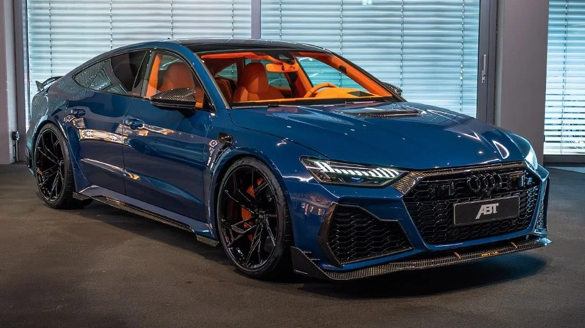
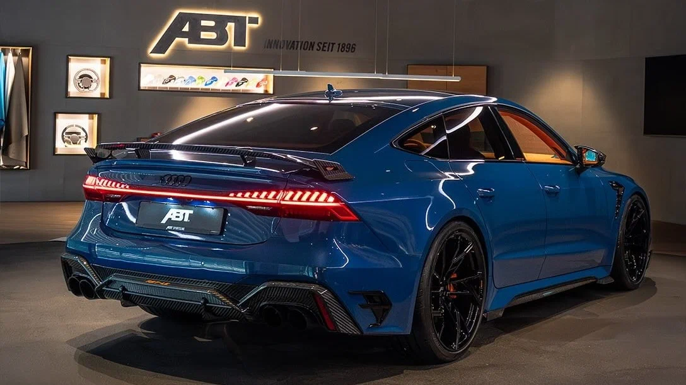
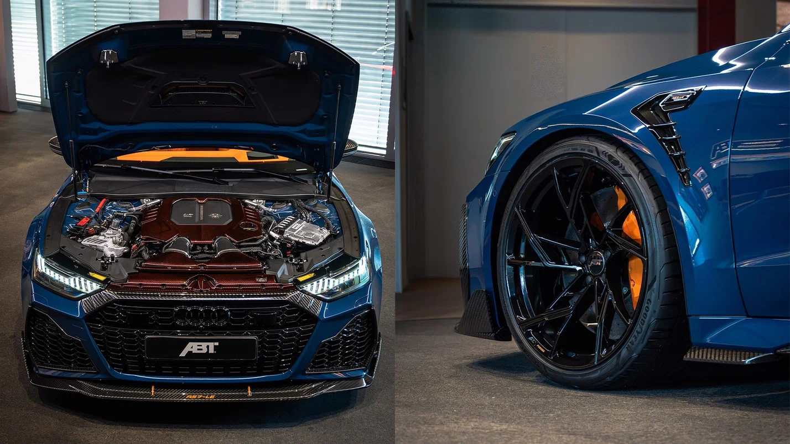

Audi RS 7 от ABT почти сравнялся по мощности с Bugatti Veyron
Ателье ABT Sportsline представило новую модификацию лифтбека Audi RS 7, созданную, как утверждается, по спецзаказу берлинского подразделения Audi. Она пополнила собой серию Legacy Edition, но автомобиль выпущен в единственном экземпляре и носит название Thunder 1 of 1. Основное отличие проекта — высокофорсированный 4,0-литровый V8, который уступает по мощности двигателю Bugatti Veyron всего одну лошадиную силу.

В детали перестройки двигателя ателье не вдаётся, опубликовав лишь основные характеристики — 1000 л.с. и 1150 Нм. Мотор стандартного Audi RS 7 развивает до 630 л.с. и 850 Нм, что позволяет пятидверке ускоряться до 100 км/ч за 3,4 секунды. Вероятнее всего, Thunder от ABT потратит на это же упражнение менее 3 секунд.

Тюнинг-проекты ABT Sportsline, как правило, отличаются сдержанностью, поэтому Thunder 1 of 1 выглядит необычно ярким. Лифтбек не только окрасили в оригинальный оттенок синего, но и оформили карбоновые детали подкапотного пространства в тёмно-красный. Кузову RS 7 оптимизировали аэродинамику при помощи лёгкого углепластикового обвеса, украшенного оранжевыми акцентами — в цвет тормозных суппортов и основного тона отделки интерьера. Наконец, на потолке салона лифтбека появилось диодное «звёздное небо».
